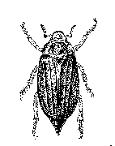
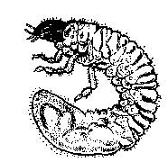

Májusi cserebogár
Melolontha melolontha
Életmódja. Magyarországon hároméves fejlődésű. Az utolsó telet a talajban imágó alakban tölti. Áprilisban, május elején jön elő, amikor 20-25 cm mélységben a talaj hőmérséklete eléri a 11 °C-ot. Először a hímek, néhány nap múlva a nőstények jelentkeznek. Alkonyatkor repülnek. Legerősebb rajzásukat általában a hűvös, esős időszakot követő fölmelegedéskor figyelték meg. A bogarak a hajnali órákban a leveleken dermedten ülnek. Amikor már 7-10 napig táplálkoznak, és a nemek azonos arányban vannak, párosodnak. A megtermékenyített nőstény petelerakás végett előszeretettel keresi fel a kevésbé árnyékolt területeket (új erdőtelepítéseket, kapásnövényeket stb.).
Kártétele, kárképe. A bogár április-májusban a lombosfák és cserjék levélzetét rágja. A kárkép kezdetben szabálytalan karéjos rágás, később tarrágás. A lárva (pajor vagy csimasz) a gyökérzetet és az egyéb föld alatti növényrészeket rágja. A fiatal növények, csemeték hervadása, a vastagabb és mélyebb gyökérzetű növények gyenge fejlődése és sárgulása általában a pajorok kártételére figyelmeztetnek. Az ilyen növények gyökerén felszínes vagy mélyebb, szabálytalan berágások, vájatok láthatók. A vékonyabb főgyökér többnyire ferdén át van rágva. A pusztuló tövek alatt (vagy közelében) a pajor is megtalálható. A húsos gyökéren és gumón csak a szabálytalan rágások (odvasítások) nyomai látszanak.
Védekezés:
- talajfertőtlenítő granulátumokkal (Temik 5G, Basudin, Diazinon, Chinofur)